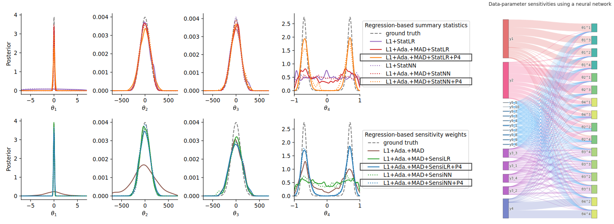
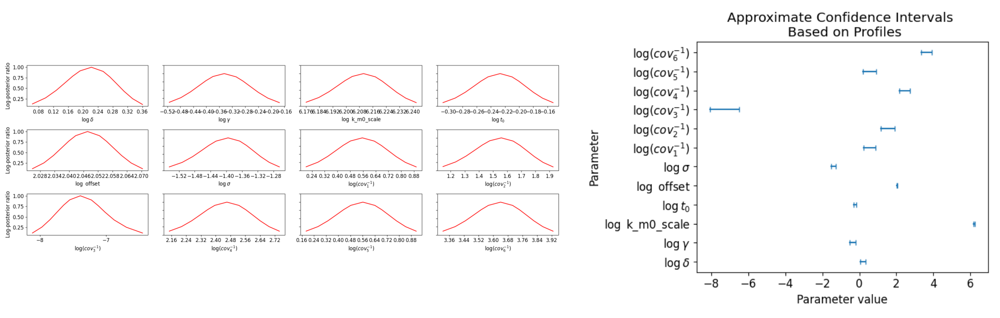
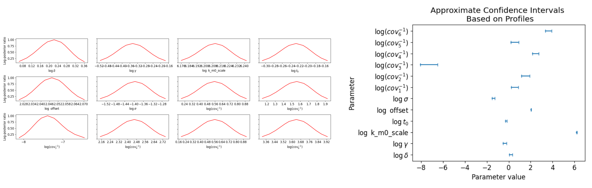

Systems Biology
Model types

Methods + Software

Example: Tumor growth multi-scale model
based on Jagiella et al., Cell Systems 2017
- cells modeled as interacting stochastic agents, dynamics of extracellular substances by PDEs
- simulate up to 106 cells
- 10s - 1h for one forward simulation
What we tried |
|
Failed |
Worked |
|
- |
ABC
ABC
simulation-based approximate Bayesian computation
-
conflicting goals:
- reduce approximation error $\varepsilon$
- keep high acceptance rates
ABC-SMC
combine with a sequential Monte-Carlo scheme
github.com/icb-dcm/pyabc
Klinger et al., Bioinformatics 2018 and Schälte et al., JOSS 2022
# specify problem and parallelization
abc = ABCSMC(model, prior, distance, sampler)
# pass data
abc.new(db, data)
# run it
abc.run()

Parallel backends: 1 to 1,000s cores

Parallelization strategies
Klinger et al., CMSB Proceedings 2017
fitmulticell.gitlab.io
a platform for modeling, simulation and inference for multi-scale multi-cellular models

Application example

Application example

Uncertainty-aware predictions, easy data integration.
Define summary statistics

- 400 cores
- 2 days
- 1.8e6 simulations
Robust and efficient ABC via inverse regression models
Problem:
Fitting heterogeneous data

How to account for data informativeness?
- construct low-dimensional summary statistics (Fearnhead & Prangle, JRSS 2012)
- or: define sensitivity weights via the sensitivity matrix $S = \nabla_{\bar y} s(\bar y_\text{obs})$, $q_{i_y} = \sum_{i_\theta=1}^{n_\theta} \frac{\left|S_{i_yi_\theta}\right|}{ \sum_{j_y=1}^{n_y}\left|S_{j_yi_\theta}\right|}$
- combine with scale normalization (Prangle, Bay. A. 2017) and outlier correction (Schälte et al., bioRxiv 2022) via adaptive weighting in an SMC framework
- learn functions of parameters $\lambda(\theta)$ to capture higher-order moments
Theorem (Optimal summary statistics)
[...] Given $\lambda:\mathbb{R}^{n_\theta}\rightarrow\mathbb{R}^{n_\lambda}$ such that $\mathbb{E}_{\pi(\theta)}[|\lambda(\theta)|]<\infty$, define summary statistics as the conditional expectation $$s(y) :=\mathbb{E}[\lambda(\Theta)|Y=y]=\int \lambda(\theta)\pi(\theta|y)d\theta.$$ Then, it holds $\left\lVert{\mathbb{E}_{\pi_{\text{ABC},\varepsilon}}[\lambda(\Theta)|s(y_\text{obs})] - s(y_\text{obs})}\right\rVert \leq \varepsilon$, and therefore \begin{equation}\label{eq:sreg_conv} \lim_{\varepsilon\rightarrow 0}\mathbb{E}_{\pi_{\text{ABC},\varepsilon}}[\lambda(\Theta)|s(y_\text{obs} )]=\mathbb{E}[\lambda(\Theta)|Y=y_\text{obs}]. \end{equation}In practice: Train regression model $s: y \mapsto \lambda(\theta) = (\theta^1,\ldots,\theta^k)$.
Evaluation: Simple test model
- only combination of scale normalization, informativeness assessment, and regression target augmentation permits accurate inference
- sensitivity weights give further insights
Evaluation: Agent-based tumor spheroid model 
- can via sensitivity weighting in complex application simultaneously account for informativeness and outliers
Efficient exact ABC with noise

Problem: (biological) data are noisy

What happens when ignoring noise in ABC?
Assume: Model $y\sim \pi(y|\theta)$ does not account for noise.
But: Measurements are noisy, $\bar y_\text{obs} \sim \pi(\bar y|y,\theta)$.

How to account for noise?

“ABC gives exact inference for the wrong model”
Richard Wilkinson, Stat. App. Gen. Mol. Bio. 2013
- noise model permits exact likelihood-free inference
- applicable to any stochastic model and noise model
- parameterized noise model
Problem: Existing methods do not scale in practice


Can we make it efficient?
Schälte and Hasenauer, Bioinformatics 2020-
How to propose parameters?
$\rightsquigarrow$ integrate in SMC via tempering, $\pi(\bar y_\text{obs}|y,\theta)^{\color{red}{1/T_t}}$. -
How to choose the normalization $c$?
$\rightsquigarrow$ based on previous samples, and avoid decapitation via reweighting $\tilde w := \color{red}{\frac{\left(\frac{\pi(\bar y_\text{obs}|y,\theta)}{c_t}\right)^{1/T_t}}{\min\left[\frac{\pi(\bar y_\text{obs}|y,\theta)}{c_t},1\right]^{1/T_t}}}\cdot\frac{\pi(\theta)}{g_t(\theta)}$ -
How to choose the temperatures $T_t$, $t=1,\ldots,n_t$?
$\rightsquigarrow$ predict the acceptance rate $\gamma = \int\left(\int\min\left[\left(\frac{\pi(\bar y_\text{obs} |y,\theta)}{c_{t}}\right)^{1/T},1\right]\pi(y|\theta)\mathop{dy}\right)g_{t}(\theta)\mathop{d\theta}$
(esp. allows choosing $T_1$)


Theorem (Exact inference)
Using the modified kernel with $c>\pi(\bar y_\text{obs}|y,\theta)$ $\forall y,\theta$, we sample from the true posterior \[\pi_\text{ABC}(\theta | \bar y_\text{obs}) = \pi(\theta | \bar y_\text{obs}) \propto \int\pi(\bar y_\text{obs}|y,\theta)p(y|\theta)\mathop{dy}\cdot\pi(\theta)\] assuming noisy data $\bar y_\text{obs}\sim\pi(\bar y|y,\theta)$.
- non-trivial noise allows to do exact likelihood-free inference
- applicable to stochastic models
- parameterized noise model
Evaluation

- Applicable to various model and noise model types
- orders of magnitude speed-up
- scales to challenging application problems
Amortized inference for mixed-effects models
Amortized inference via invertible neural networks
you have to solve many similar problems? amortize the solution!mixed-effects modeling

| dynamical model: | $\dot x = f(x,\theta)$ |
| observables: | $y = h(x, \theta) + \varepsilon$ |
| parameters: | $\theta = A\alpha + B\beta,\quad\beta\sim\mathcal{N}(0,\Sigma)$ |
Problem
- estimate parameters: maximize over $\alpha$ and $\Sigma$ the likelihood of data $y_\text{obs}$, marginalized over random effects $\beta$, $$\pi(y_\text{obs}|\alpha,\Sigma) = \prod_i\int\color{red}{\pi(y_i|\theta)}\pi(\theta|\alpha,\Sigma)d\theta$$
- problem:
evaluating these (high-dim) integrals is challenging,
especially with many individuals
An amortized approach
- idea: rewrite in terms of an individual-specific posterior: $$\begin{split}\pi(y_\text{obs}|\alpha,\Sigma) &= \prod_i\pi(y_i)\int\pi(\theta|y_i)\frac{\pi(\theta|\alpha,\Sigma)}{\pi(\theta)}d\theta \\&= \prod_i\pi(y_i)\mathbb{E}_{\theta\sim\pi(\theta|y_i)}\left[\frac{\pi(\theta|\alpha,\Sigma)}{\pi(\theta)}\right]\end{split}$$
- ... and approximate the posterior using a neural density estimator trained on synthetic data!
Results

 

- NN fits the posterior well
- after training once ($1-2h$), the optimization is very fast ($s-min$)
- even uncertainty analysis easily possible
Summary
Summary
- SBI enables analyzing complex stochastic models of biological systems
- ABC is widely applicable
- handling noise correctly matters
- combine modeling and machine learning to learn more from simulations
- neural density estimation opens new possibilities
Not everything is a nail.
Thanks! Questions?
Thanks to: Jan Hasenauer, Emad Alamoudi, Emmanuel Klinger, Elba Raimundez, Zijian Wang, Jonas Arruda, Clemens Peiter, the FitMultiCell and EMUNE consortia, and many more.
Backup
Scale-normalizing and outlier-robust adaptive distances
- Integrate heterogeneous data scales via a scale-normalizing adaptive distance $$d(y,y_\text{obs}) = \left(\sum_{i_y}(r_{i_y} \cdot (y_{i_y} - y_{\text{obs},{i_y}}))^2\right)^{1/2}$$ with weights adjusted in every ABC-SMC generation (Prangle, Bay. Ana., 2017)
- Problem: outliers can severely affect results

- Use robust norms (e.g. L1) with adaptive weights to normalize scales and down-weight outliers
Adaptive population sizes
Klinger et al., CMSB Proceedings 2017 idea: adapt population size trying to match a target accuracy
idea: adapt population size trying to match a target accuracy
Self-tuning distance functions
based on Prangle, Bayesian Analysis 2015
And ...